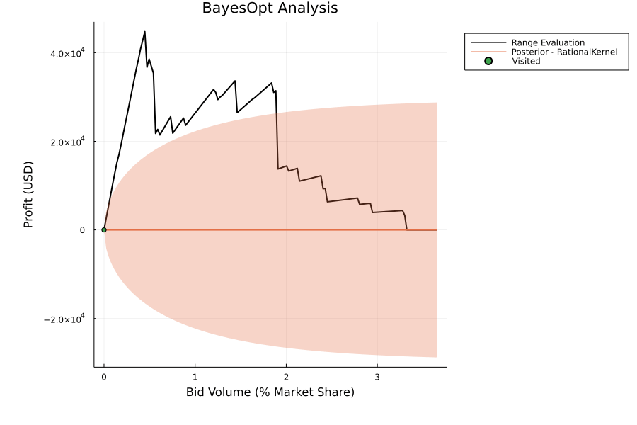

OptimalBids.jl
Bilevel decisions · Market clearing · Search over offers
![A market is four functions. build_market sets it up once from the network, the strategic generators and the solver. An offer u (the offered quantities u_i of the strategic generators i in S) is written into the network by change_bids!; clear_market! solves the operator's clearing, minimize the sum of c_j g_j subject to power flow with balance at each bus n (price pi_n) and 0 at most g_i at most u_i, as a PowerModels OPF (DC, AC, ...); calculate_profit returns J(u), the sum over i of q_i star times pi_i star. The same market gives three kinds of access: evaluation with profit_for_bid!, one clearing per call; local, with profit_and_gradient_for_bid!, whose estimate of dJ/du_i is pi_i star if q_i star is about u_i and 0 otherwise, with prices held fixed and also registered as a ChainRules rule; and exact, with instantiate_model(market; jump_model), which writes the clearing as the lower level of a bilevel model.](assets/diagrams/optimalbids--market-compact.svg)
An offer is scored only after a market operator clears it, so the profit of a candidate offer is a function of another agent's optimization. OptimalBids.jl reduces a market to four operations (building it, changing the offers, clearing, and computing profit), so that derivative-free search, gradient search and exact bilevel reformulations act on one market definition.
Installation
] add OptimalBidsA market is four functions
A market is a subtype of the abstract type Market that implements four functions; these are what a new market type has to provide (see the docstrings, e.g. @doc change_bids!):
| Function | What it does |
|---|---|
build_market | builds the market once from its data and a solver |
change_bids! | writes the strategic agent's offers into the market |
clear_market! | clears the market (for PowerModelsMarket, an optimal power flow) |
calculate_profit | returns the cleared volumes, clearing prices and per-offer profit |
The functions profit_for_bid! and profit_curve! are built on these four in a generic way, so they evaluate any new market without further code (see e.g. @doc profit_for_bid!). Search methods compared through them share the same evaluation and can be charged per clearing.
The clearing is a PowerModels formulation
PowerModelsMarket adds strategic generators to a PowerModels.jl network with add_generator (zero cost, zero capacity), treats their maximum outputs as the offered quantities, and clears by optimal power flow in the formulation passed as market_formulation: DC power flow by default, AC power flow, or any other PowerModels formulation, with the problem builder passed as opf_builder. Linear and nonlinear clearing of one network therefore differ in a single argument.
Notation
The diagram above and the examples use the following symbols; cleared_volumes and clearing_prices are fields of the named tuple returned by calculate_profit(market).
| Symbol | In the code | Meaning |
|---|---|---|
| $\mathcal S$ | strategic_generators | the strategic generators |
| $u_i$ | new_bids[i] | offered quantity of generator $i$ (its pmax) |
| $q_i^\star(u)$ | cleared_volumes[i] | cleared output of generator $i$ |
| $\pi_i^\star(u)$ | clearing_prices[i] | price at generator $i$'s bus |
| $J(u)$ | profit_for_bid! | total profit of the offer $u$ |
so that
\[J(u) = \sum_{i\in\mathcal S} q_i^\star(u)\,\pi_i^\star(u).\]
The price $\pi_i^\star$ is the multiplier of power balance at the generator's bus; calculate_profit reads it as -lam_kcl_r, the dual that PowerModels reports, with its sign flipped.
One market, three kinds of access
- Evaluation.
profit_for_bid!costs one clearing per call and serves derivative-free methods and surrogate models; the examples drive it with Optim.jl, with Bayesian optimization in Nonconvex.jl, and with Gaussian-process fits. - Local.
profit_and_gradient_for_bid!returns the profit with a first-order estimate from the clearing prices: $\partial J/\partial u_i \approx \pi_i^\star$ for each offer that clears at its limit (within 10 %), and zero for the others. The estimate holds prices fixed, and it is also registered as a ChainRules rule, so optimizers based on automatic differentiation step through a clearing. - Exact.
instantiate_model(market; jump_model = Lower(model))writes the clearing into the lower level of a BilevelJuMP.jl model, whose reformulations give the single-level program with equilibrium constraints.

Where to go next
- Nonconvex.jl: Bayesian optimization, NLopt (BOBYQA, CCSAQ) and multistart search over offers.
- Optim.jl: Nelder–Mead, Brent and L-BFGS with the price-based gradient.
- AbstractGPs.jl: Gaussian-process fits to the profit curve.
- API: every docstring.